The Blox Bulletin
Le Chapitre Deux Révélé : Secrets, Surprises, et Plus Encore !
RECHERCHÉS : Gate & Forge frappent à nouveau – De redoutables partenaires du crime
Alerte Émise par les Autorités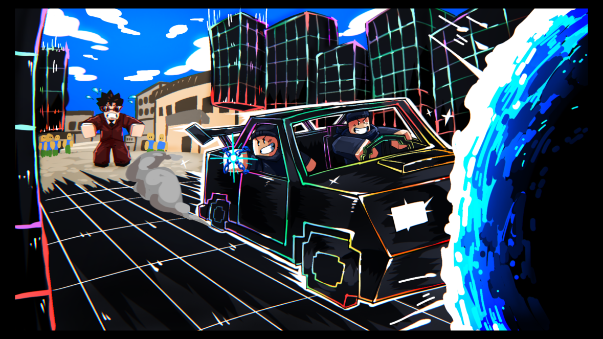
Un véhicule unique en son genre a été volé !
Le célèbre duo Gate & Forge a encore frappé — cette fois-ci lors d'une vente aux enchères publique d'un véhicule expérimental construit sur mesure. Des témoins rapportent une opération parfaitement synchronisée : Gate a ouvert un portail en pleine vente, tandis que Forge a invoqué de gigantesques structures à partir de rien, bloquant toutes les routes de poursuite en quelques secondes.
Le duo a disparu avec le véhicule avant que la sécurité ne puisse réagir. Bien que la voiture volée ne soit pas considérée comme dangereuse, sa technologie expérimentale unique la rend inestimable — et elle se trouve désormais entre de mauvaises mains.
Les autorités sont en état d'alerte maximale. Gate & Forge sont connus pour leurs tactiques audacieuses et leurs évasions impossibles.
Signalez immédiatement toute apparition. Ne tentez pas de les affronter.
Réponses à la FAQ des Développeurs
Questions de la Communauté Répondues par les Développeurs✚ Actuellement, un système de panel permet d'améliorer certains fruits déjà rework comme Gravity ou Lighting
✚ Actuellement, le système est en développement. Certains youtubeurs disent qu'il sortira lors de la prochaine update
Confirmé actullement
✚ Actuellement, nous sommes presque sûr que cela sortira cette année
La nouvelle avancée du mystérieux scientifique
Innovation & Secrets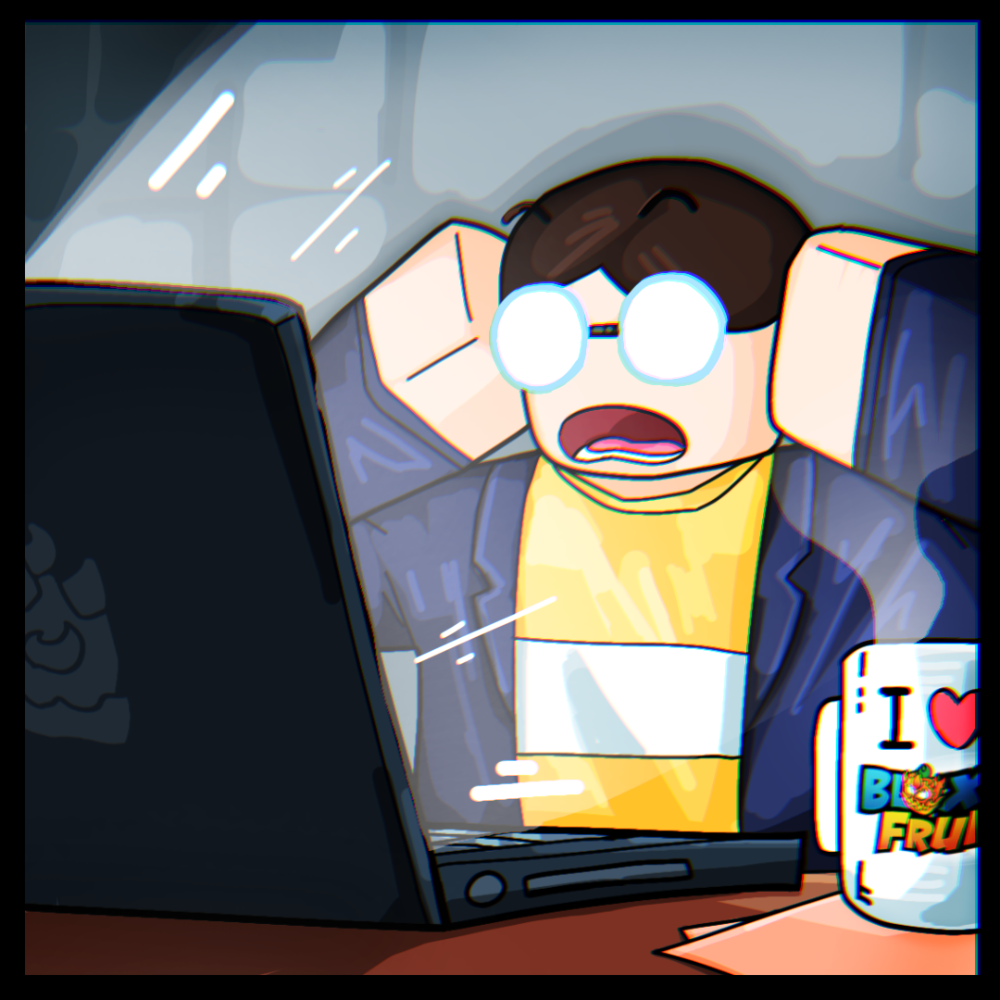
Le mystérieux scientifique derrière les Awaks de Fruits aurait réalisé une nouvelle percée majeure.
Des sources chuchotent qu'il a trouvé un moyen de pousser les fruits au-delà de leurs limites naturelles. Pas à travers des éveils... mais à travers quelque chose de bien plus obscur.
Des changements subtils. Des modifications invisibles. Des pouvoirs qui n'étaient pas censés faire surface.
Qu'a-t-il exactement découvert ? À quel genre de processus devront se soumettre ceux qui oseront essayer ? Et plus important encore... que va-t-il se passer ensuite ?
Les expériences commencent bientôt. Restez vigilants, et préparez-vous.
✚ Sortie actuellement
Favoris de la Communauté – Zoom sur les Chromatiques
Des apparences (skins) remarquables créées par nos talentueux artistes de la communauté.
Ces idées de skins Chromatiques sont de puissantes inspirations pour nous, développeurs, à utiliser lorsque nous estimons qu'il est temps d'introduire de nouvelles options Chromatiques. Bien que nous ne soyons pas encore prêts à les ajouter pour le moment, nous sommes heureux d'offrir aux créateurs de ces idées un code cadeau Roblox gratuit ou le Blox Fruit de leur choix pour leur participation, et éventuellement un exemplaire de leur Chromatique lorsqu'il fera son entrée dans Blox Fruits.
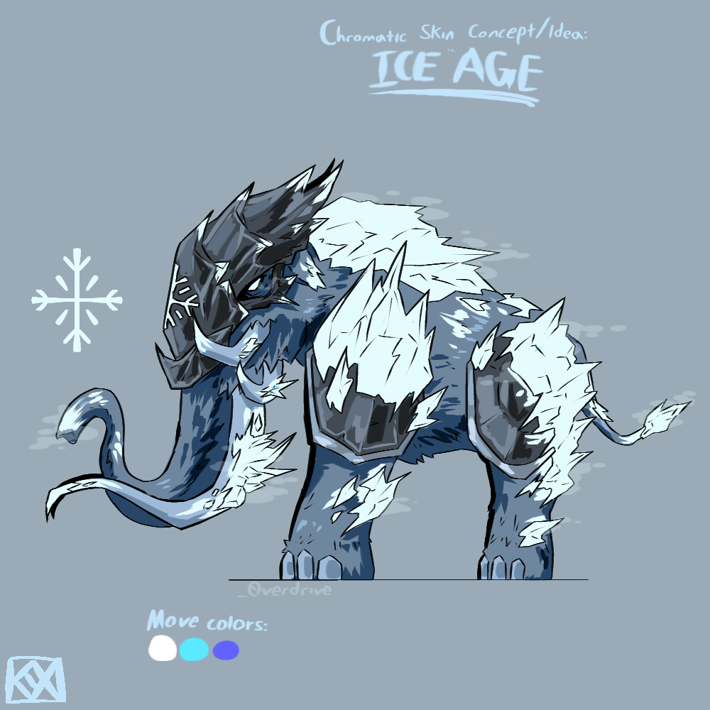
Ice Age par Overdrive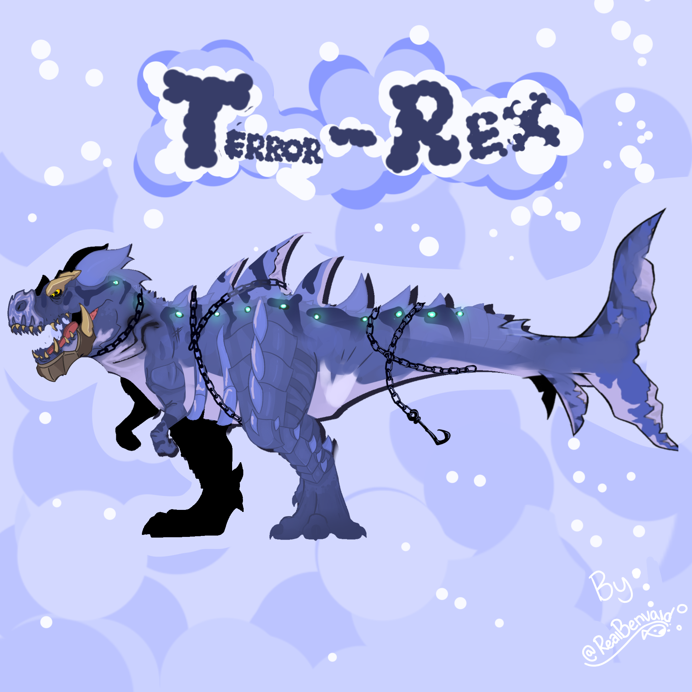
Terror-Rex par freakyf1sh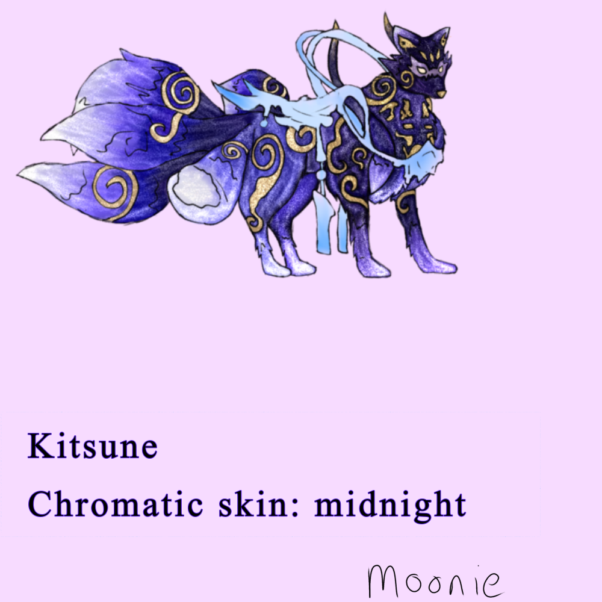
Midnight par crazyanimal9(SORTIE)
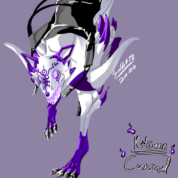
Cursed par anonymousz3r0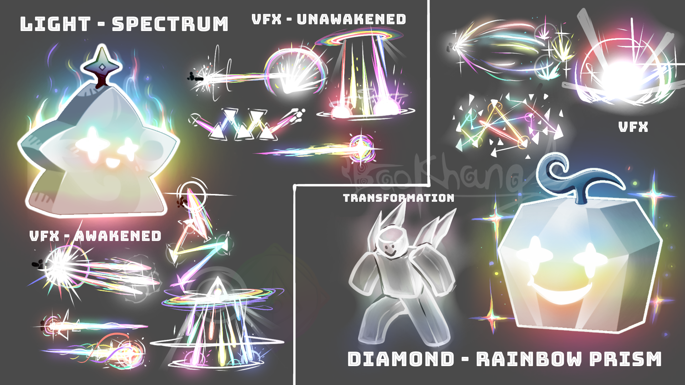
Spectrum & Rainbow Prism par baokhangg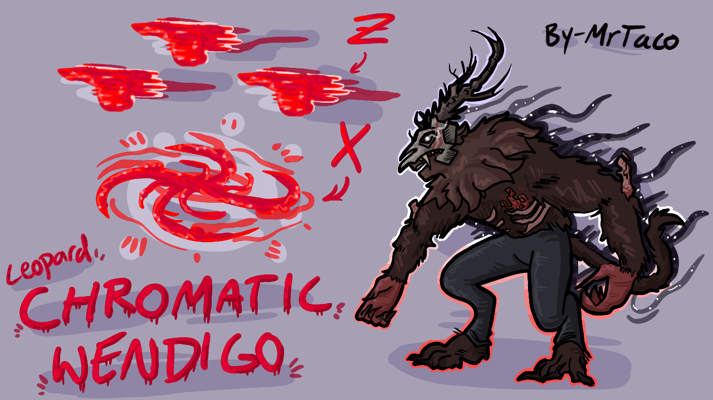
Wendigo par mrtaco6020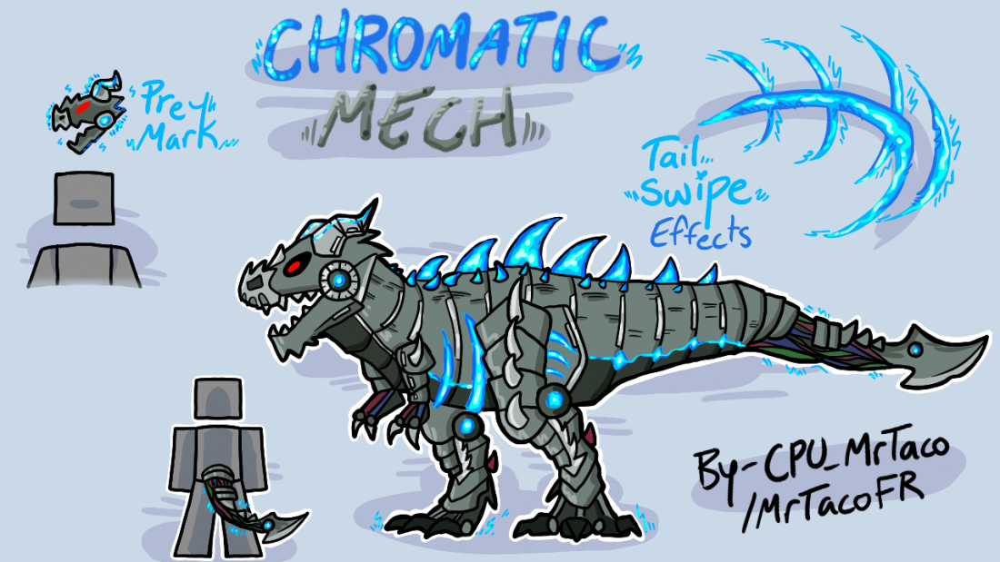
Mech par mrtaco6020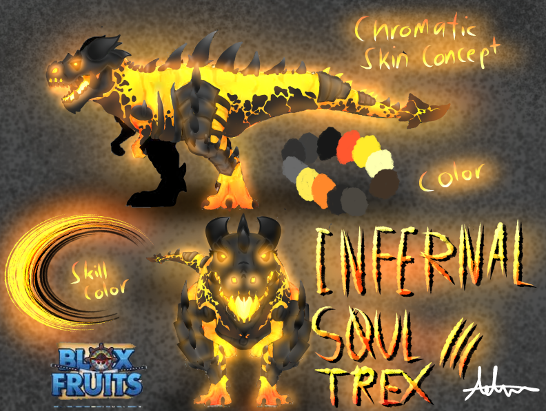
Infernal Soul par 111man111dude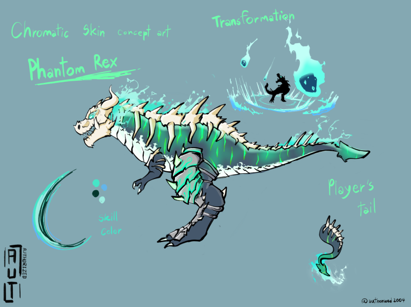
Phantom Rex par authorized2004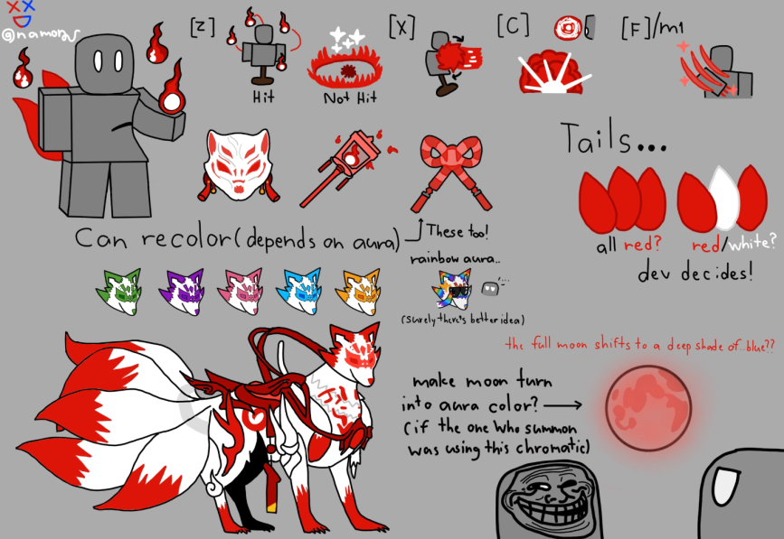
Kitsune par namon2552 (SORTIE)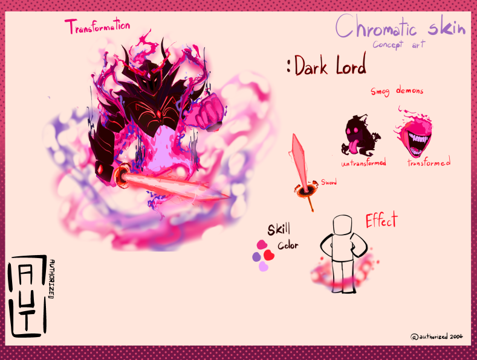
Dark Lord par authorized2004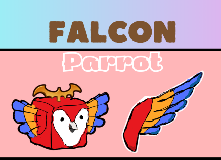
Parrot par acheeg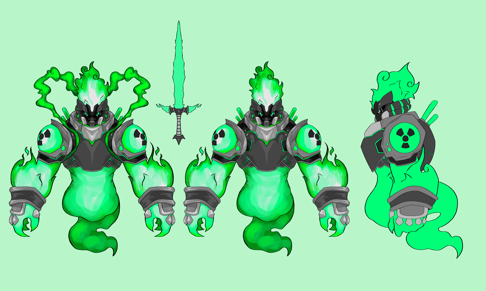
Toxic par Overdrive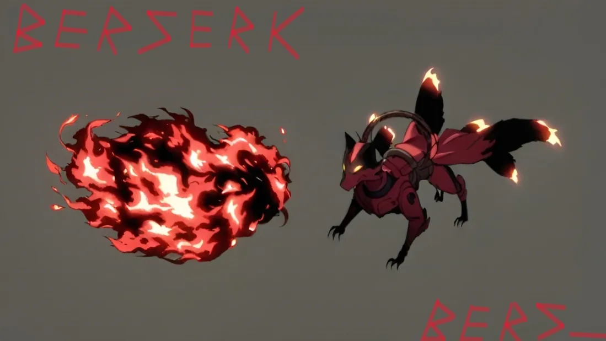
Berserk par Stephan101101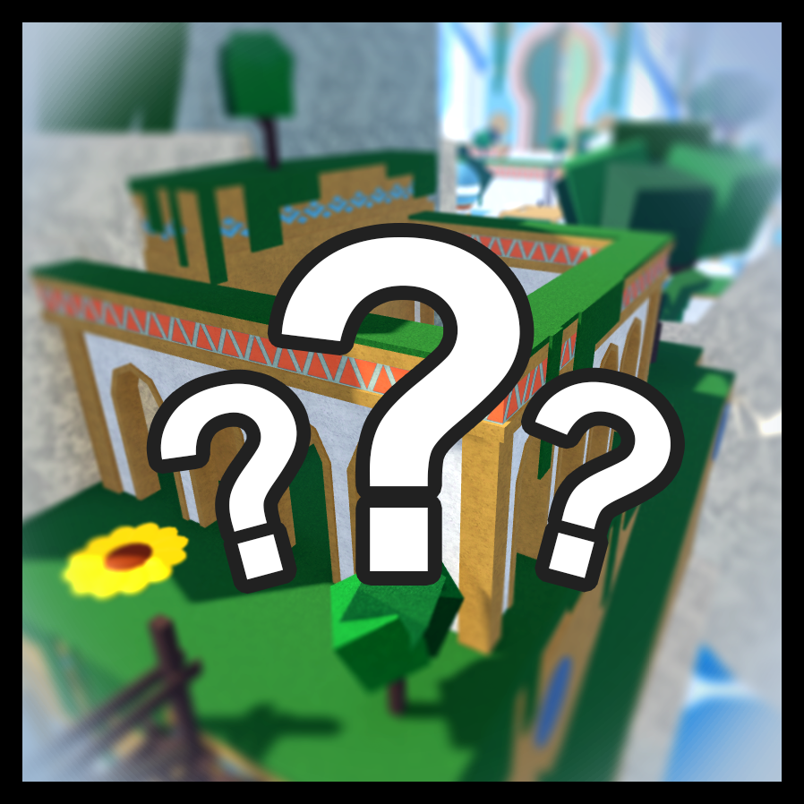